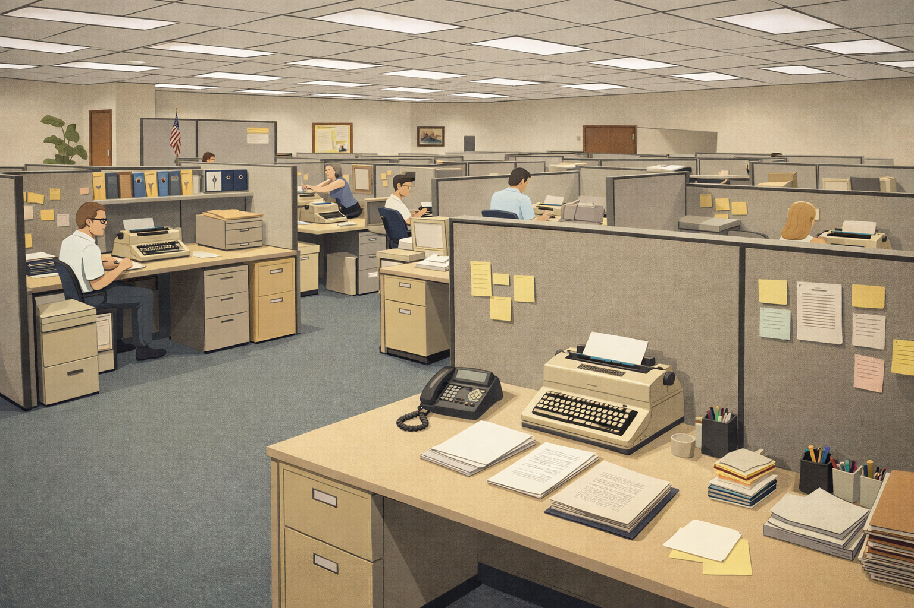

Welcome to the Time Machine! You're about to explore how digital technology has completely transformed the workplace between 1990 and 2025.
Phase 1 — Discover: Tap on each worker's card to learn their story. How has technology affected their job?
Phase 2 — Classify: Drag each worker into the correct category:
✅ Created — brand new job that didn't exist before tech
🔄 Transformed — job still exists but changed by tech
❌ Displaced — job lost or replaced by technology
Discover all 10 workers, then prove you understand the impact!
🔍 Phase 1: DiscoverExplored: 0 / 10Score: 0

📇 1990s Workplace
💻 2025 Workplace
💡 Tap each worker below to discover their story
📦 Phase 2: Classify0 / 0 sortedScore: 0
Drag each job card from the tray below into the correct category zone. Think carefully!